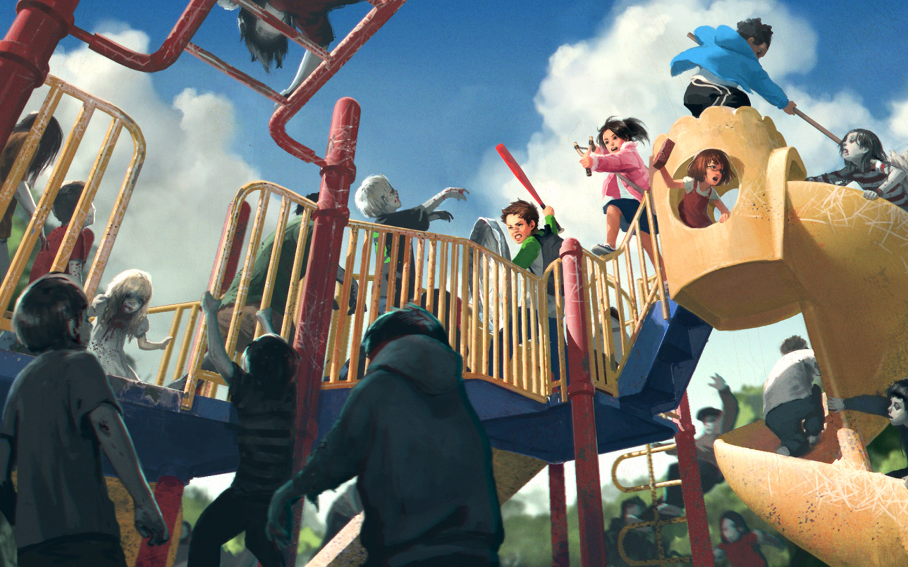

Kids fighting against zombie kids: The somewhat unexplored genre.
Welcome to my Kids fighting kid zombies Page, you can also use Google for more results!
While most zombie films, shows, comics and other sources of media may have a couple kids included in the series, its generally left to the adults to manage the group and forge ahead.
I find this picture so striking as it leaves those preconcieved notions in the dust.
These kids have managed to fortify and come together as a group without any "leaders", so to speak.
I hope they win :)
What makes this original?
- You just don't see a lot of "only kids" surviving zombies.
- It takes place on a playground (Terribly Ironic, I know).
- If you look closely, each kid is using a different set of weapons.
What weapons are they using?
- Green and white shirt boy: Uses a lightweight bat and Trashcan lid.
- Pink jacket girl: Uses a slingshot (original for zombies!)
- Red overalls(?) girl: uses a frekin brick.
- Blue jacket boy: Uses, based on the picture, what I can only assume to be a mop?
- Gray jacket unknown gender (behind the green shirt boy): No idea what they use, just that they exist.